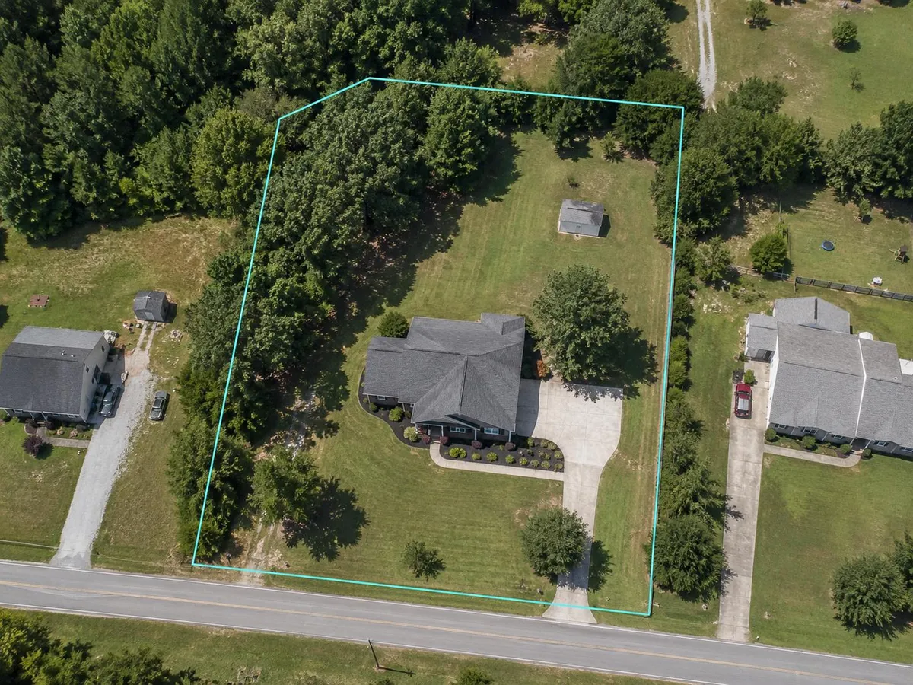

Parcel maps and aerial views
Open available county GIS parcels, aerial imagery, Google Maps and street-level views connected to the searched address.
Free North Carolina property resource
Connect one address to available county GIS parcels, property cards, aerial maps, flood resources and public records. No account required.
One address, organized resources
Availability varies by county, but the tool gathers the useful destinations in one place so you do not have to locate and learn several government websites.

Open available county GIS parcels, aerial imagery, Google Maps and street-level views connected to the searched address.
Find available county assessment cards, acreage, assessed values, deed resources and parcel identifiers.
Connect to FEMA flood maps, North Carolina flood-risk information and emergency-preparedness resources.
Useful before a home quote
Home insurance typically focuses on the estimated cost to rebuild the structure, not the property tax value, purchase price or land value. Public records can help start the conversation, but important construction details should be verified.
Simple and private
Use a complete North Carolina street address so the tool can identify the available county record.
Confirm the address, county and parcel before relying on any linked information.
Choose the county GIS, property card, map or hazard resource relevant to your question.
The consumer resource does not create an insurance customer record or save a history of the addresses you search.
Common questions
Available results may include county GIS parcel maps, property or appraisal cards, assessed values, acreage, aerial imagery, deed resources, FEMA flood maps and other location-based tools.
Yes. It is free to use and does not require an account or insurance purchase.
North Carolina counties use different GIS and property-record systems. Integrated county coverage is expanding, and some public systems provide more detail than others.
No. Public records can be incomplete or outdated. The tool is not a title search, survey, appraisal, flood determination or guarantee of insurance eligibility.
Yes. Our team can help review the construction and replacement-cost details commonly requested when comparing North Carolina home insurance options.
Start with the address
Open the free consumer tool, enter a North Carolina address and choose the property resources you need.